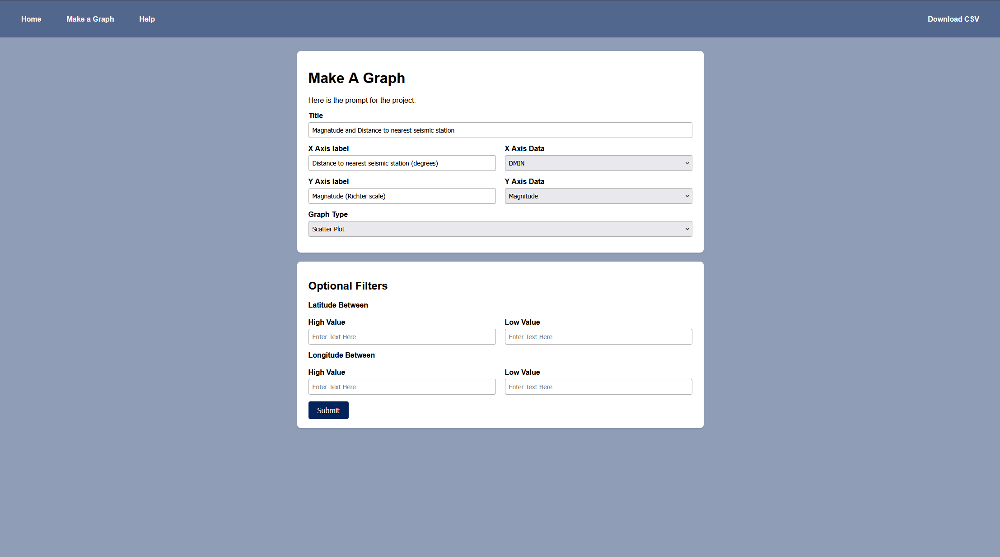
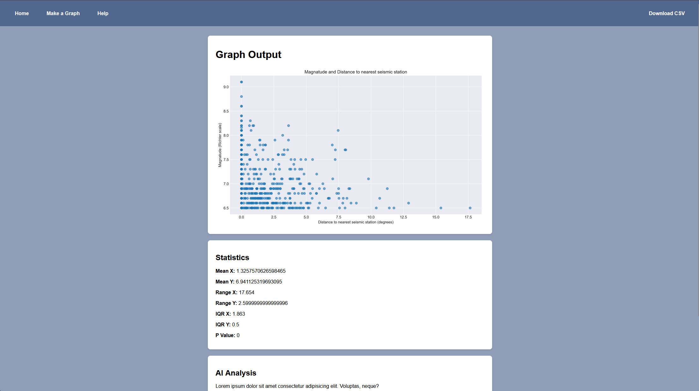

How To Use This Website


To create your own graph, use the navigation bar at the top of the site to navigate to the Make a Graph page. Above is an example of what you will see and what you can make.
Available Plot Types
- Scatter Plot — Shows the relationship between two numerical variables.
- Line Plot — Displays trends or changes over time.
- Bar Chart — Compares values across categories or bins.
- Histogram — Shows the distribution of a single variable.
- Box Plot — Displays medians, quartiles, and outliers.
- Heatmap — Uses colour intensity to show density or frequency.
- Earthquakes Per Year — Counts earthquakes grouped by year.
- Earthquakes Per Month — Counts earthquakes grouped by month.
- Average Magnitude Per Year — Shows how earthquake strength changes over time.
- Tsunamis Per Year — Counts tsunami‑triggering earthquakes per year.
- Depth Distribution — Shows how deep earthquakes occur.
- Location Map — Plots earthquake epicentres on a coordinate map.
Dataset Column Meanings
- Magnitude — Earthquake magnitude (Richter scale).
- CDI — Community Decimal Intensity (felt intensity).
- MMI — Modified Mercalli Intensity (instrumental).
- SIG — Event significance score.
- NST — Number of seismic monitoring stations
- DMNI — Distance to nearest seismic station (degrees)
- Gap — Azimuthal gap between stations (degrees).
- Depth — Earthquake focal depth (km).
- Latitude — Epicenter latitude.
- Longitude — Epicenter longitude.